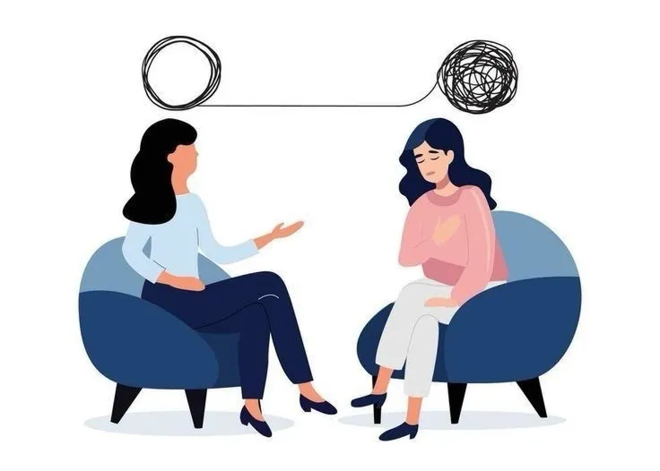

Мамай Ирина Павловна
Должность: социальный педагог
Место работы: МБОУ СШ г.Горбатов
Образование: высшее (бакалавриат)
Стаж работы: в образовательном учреждении - 2 года, в должности социального педагога - 2 года.
Должность: социальный педагог
Место работы: МБОУ СШ г.Горбатов
Образование: высшее (бакалавриат)
Стаж работы: в образовательном учреждении - 2 года, в должности социального педагога - 2 года.
Социальный педагог – это мультиспециалист нового поколения. Он вышел за рамки классического предметника, вооружившись знаниями из юриспруденции и психологии. Его сверхзадача – быть не наблюдателем, а активным участником в жизни ребёнка: диагностировать проблему и, что главное, стать его личным «навигатором» на пути к её решению.
